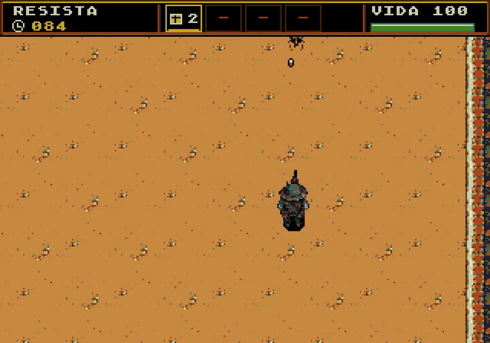
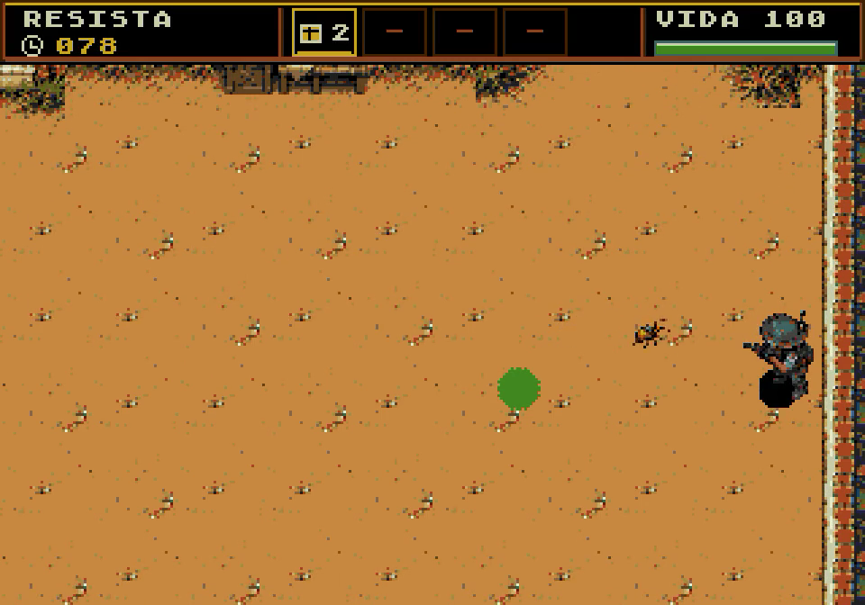
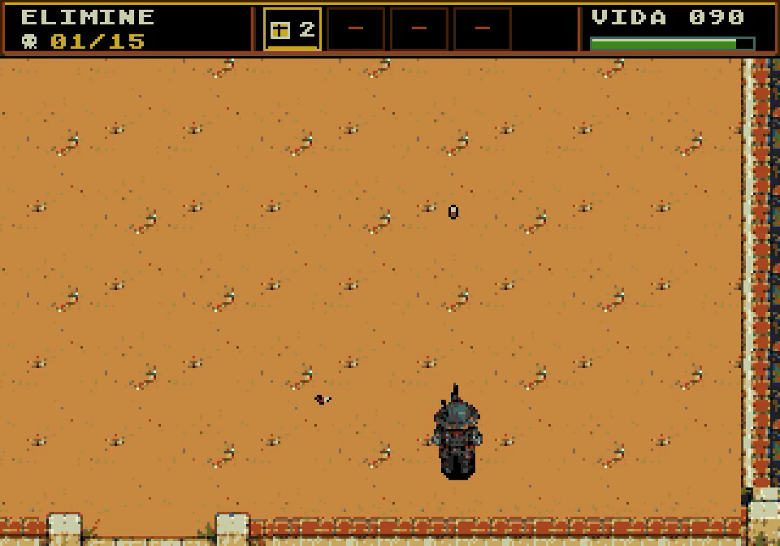
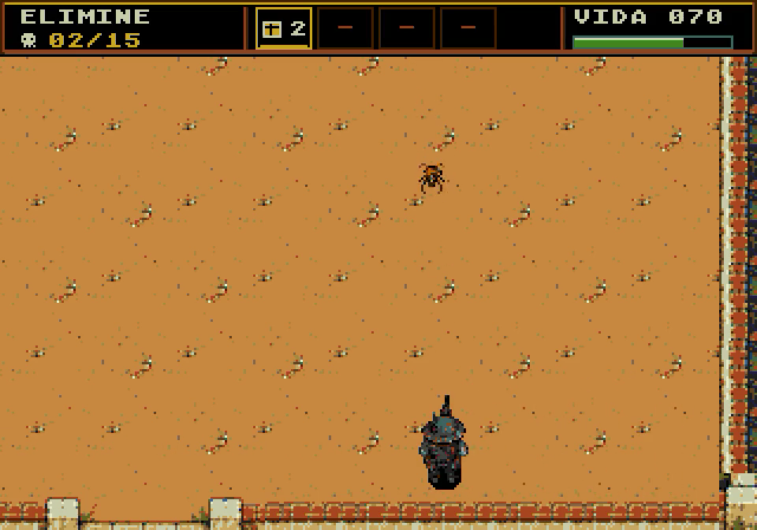
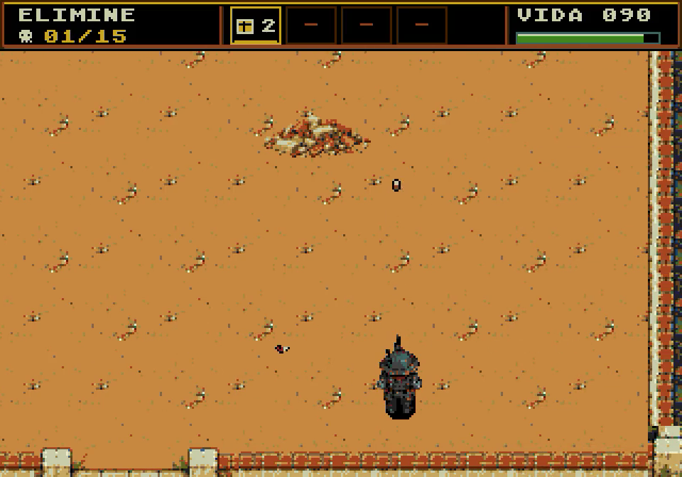
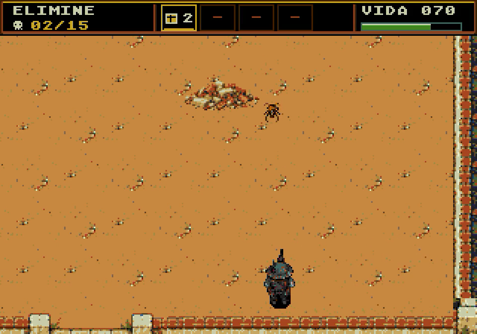
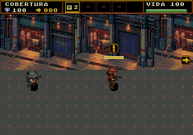
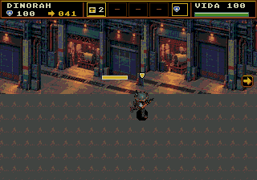

Auditoria histórica da versão anterior. As correções posteriores, comparações e novos playtests estão na revisão das fases corrigidas.
Teste de composição visual · Todas as fases
19 variações examinadas a partir dos mapas nativos completos e das capturas reais de entrada, movimento e ação. Inclui comparação de entrada em PAL, igreja destruída, portões e ignição. As referências 1, 2A/2B e 5 permanecem preservadas.
6 aceitáveis com ressalvas
5 precisam de ajustes
8 reprovadas nesta revisão
Aprovação técnica e aprovação visual são critérios separados. Os testes anteriores confirmam objetivos, colisões e gráficos na memória do console. Esta auditoria examina composição, legibilidade e coerência artística. Nenhuma fase recebe aprovação visual final automática por passar nos testes técnicos.
Foram inspecionados 82 quadros derivados dos playtests já gravados desta ROM. Os pareceres abaixo são julgamentos manuais de design; não são notas produzidas por algoritmo nem resultados de um estudo com jogadores. A ROM e os assets do jogo não foram alterados nesta revisão.
Pareceres e prioridades em JSON · Origem dos quadros e método · Fontes, recortes e revisão técnica
P0: identificação do objetivo ou composição fundamental comprometida. P1: integração, repetição ou orientação que exige revisão. P2: polimento preservando a base.
Ordem recomendada: 3 → 6B → 8 → 11 → 14 → 15; depois 4/9 e os ajustes de 6A/7/10/12/13B. Nas referências aprovadas, aplicar somente os ajustes de enquadramento e leitura registrados; preservar as composições existentes.
Fase 1 · Pátio da igreja
Aceitável com ressalvas · P2
Objetivo: Sobreviver 90 s
O que funciona: Igreja, muro e portão estabelecem o lugar; o espaço aberto atende à fase introdutória.
- O enquadramento inicial mostra apenas parte da igreja; ao descer, a arquitetura desaparece e resta quase só o piso.
- A textura do chão se repete e há pouca indicação visual do trajeto de evacuação.
Correção indicada: Preservar o cenário aprovado. Revisar o enquadramento inicial e tornar a saída dos civis um ponto de atenção no perímetro, mantendo o centro livre.
Critério de aceitação: No início, reconhecer igreja e portão; no combate, localizar o herói sem acrescentar decoração ao espaço de esquiva.
 Entrada · NTSC · captura do emulador
Entrada · NTSC · captura do emulador
Movimentação / meio · NTSC · 6s do vídeo
Ação · NTSC · 12s do vídeo Entrada · PAL · captura do emulador
Entrada · PAL · captura do emuladorMapa nativo completo · mantenha a proporção e role para explorar
Fase 2A · Igreja preservada
Aceitável com ressalvas · P2
Objetivo: Eliminar 15 insetos
O que funciona: A continuidade com o pátio da primeira fase é clara.
- A reutilização praticamente integral comunica pouco a mudança de situação.
- Quando a câmera se afasta da borda norte, a preservação da igreja deixa de ser visível.
Correção indicada: Manter arte aprovada; reforçar a apresentação da igreja intacta e a leitura do novo inimigo por silhueta e sinal de ataque.
Critério de aceitação: A igreja preservada deve ser reconhecida na apresentação da fase; o atirador deve se diferenciar durante a ação.
 Entrada · NTSC · captura do emulador
Entrada · NTSC · captura do emulador
Movimentação / meio · NTSC · 6s do vídeo
Ação · NTSC · 12s do vídeo Entrada · PAL · captura do emulador
Entrada · PAL · captura do emuladorMapa nativo completo · mantenha a proporção e role para explorar
Fase 2B · Igreja destruída
Aceitável com ressalvas · P2
Objetivo: Eliminar 15 insetos; entulho sólido
O que funciona: Ruína e entulho diferenciam a consequência da bomba.
- Entulhos compartilham cores do chão, reduzindo a leitura dos volumes que bloqueiam os pés.
- A destruição fica no topo e pode sair do enquadramento durante o combate.
- A ruína é parcial: grande parte do telhado permanece inteira. A intensidade da consequência precisa corresponder à apresentação narrativa.
Correção indicada: Preservar a composição aprovada; reforçar contorno/sombra dos sólidos e apresentar a ruína antes da luta.
Critério de aceitação: As pilhas sólidas devem ser distinguíveis das manchas decorativas, sem aumentar o ruído do piso.
 Entrada · NTSC · captura do emulador
Entrada · NTSC · captura do emulador
Movimentação / meio · NTSC · 6s do vídeo
Ação · NTSC · 12s do vídeo Entrada · PAL · captura do emulador
Entrada · PAL · captura do emuladorMapa nativo completo · mantenha a proporção e role para explorar
Fase 3 · Rua ao galpão
Reprovada nesta revisão · P0
Objetivo: Percorrer 2560 px com desvios e cobertura
O que funciona: A igreja reaproveita a referência original e há quatro desvios principais.
- A faixa atrás dos telhados repete uma textura de chão em verde/laranja; parece terreno subindo e não um fundo distante.
- Casas idênticas, igreja mais detalhada e veículos reduzidos com pouca definição quebram a consistência de escala e pixels.
- Chão quase uniforme e repetição das fachadas deixam trechos visualmente vazios; o caminho testado tem um trecho final reto de cerca de 700 px.
Correção indicada: Recompor o quarteirão com fundo menos contrastado, muros/quintais/vegetação localizada e três ou quatro fachadas coerentes. Redesenhar a silhueta das barricadas e destacar o galpão na chegada.
Critério de aceitação: Em entrada, meio e chegada, fundo separado do caminho, obstáculos reconhecíveis e um marco urbano identificável; a igreja mantém a referência.
Mapa nativo completo · mantenha a proporção e role para explorar
Fase 4 · Interior do galpão
Reprovada nesta revisão · P1
Objetivo: Eliminar 20 insetos
O que funciona: Paredes, prateleiras e portão estabelecem um interior de galpão no mapa completo.
- No enquadramento inicial, janelas e parte importante da parede ficam cortadas; ao mover, a fase volta a parecer um piso com caixas.
- Grande área ocre quase lisa, caixas muito detalhadas e carrinho pouco definido não têm a mesma densidade visual.
- As bordas dos recortes das caixas/carrinho deixam manchas de material diferentes do piso simplificado.
Correção indicada: Recompor o piso e a integração dos objetos a partir de uma única linguagem de materiais. Enquadrar o portão e usar pilares/racks do perímetro como contexto visível.
Critério de aceitação: Reconhecer o galpão em todos os três enquadramentos sem depender de uma caixa isolada; nenhum retângulo ou halo de piso recortado ao redor dos objetos.
Mapa nativo completo · mantenha a proporção e role para explorar
Fase 5 · Sinal na Santa
Aceitável com ressalvas · P2
Objetivo: Proteger 120 s
O que funciona: A Santa e o círculo de proteção criam o foco mais claro entre as missões de defesa.
- Piso texturado e várias setas competem entre si; a fachada do galpão aparece pouco nos enquadramentos inferiores.
- O destaque amarelo do objetivo é eficaz, mas parte da sinalização é redundante.
Correção indicada: Preservar o cenário aprovado e o foco na Santa; reduzir sinalização redundante e manter uma vista de contexto do galpão na apresentação.
Critério de aceitação: A Santa permanece localizável com combate ativo, sem confundir os marcadores com projéteis ou inimigos.
Mapa nativo completo · mantenha a proporção e role para explorar
Fase 6A · Esgotos
Precisa de ajustes · P1
Objetivo: Escolta 3072 px
O que funciona: Arcos, canais e tubulações formam um esgoto reconhecível; a paleta não apresenta os buracos pretos do diagnóstico anterior.
- O piso apresenta uma grade muito repetida e forte; detalhes da parede competem com os personagens escuros.
- As baias se repetem por grande parte do percurso, com poucos marcos para indicar avanço.
Correção indicada: Acalmar o piso, reduzir contraste dos detalhes de fundo e criar setores reconhecíveis de drenagem/inspeção. Melhorar separação entre Dinorah e a parede.
Critério de aceitação: Herói e Dinorah distinguíveis sem depender apenas da barra amarela; entrada, meio e saída reconhecíveis pelo cenário.
Mapa nativo completo · mantenha a proporção e role para explorar
Fase 6B · Esgotos sob pressão
Reprovada nesta revisão · P0
Objetivo: Escolta 3072 px;2 válvulas e 2 portões
O que funciona: A arquitetura de esgoto e a sequência de passagem estão presentes.
- O piso arroxeado e o padrão diagonal não mantêm a família de materiais da 6A.
- Nos quadros dos portões fechados, a barreira se lê como postes/linhas muito finas; a válvula depende do número/marcador para ser reconhecida.
- A relação entre portão, parede, tubulação e área de operação não fica evidente no espaço.
Correção indicada: Unificar os materiais com 6A. Compor cada portão como uma abertura arquitetônica completa e conectar visualmente a válvula à tubulação; distinguir fechado, liberado e destruído.
Critério de aceitação: Com HUD e números ocultos, identificar o portão fechado, a válvula e a passagem liberada nos quadros de interação.
Mapa nativo completo · mantenha a proporção e role para explorar
Fase 7 · Abrigo O Último Chão
Precisa de ajustes · P1
Objetivo: Transportar 5 cargas
O que funciona: Casas, escadas e barricadas definem uma área residencial com rotas de transporte.
- O piso tem manchas pequenas repetidas, e as portas azuis/laranjas do fundo atraem mais atenção que as cargas.
- As cargas amarelo-marrons e o depósito marcado apenas com D têm pouca identidade própria em meio aos insetos.
Correção indicada: Reduzir o ruído do solo e fortalecer silhueta de caixa/suprimento. Dar ao depósito uma estrutura reconhecível e um ponto de entrega coerente com o abrigo.
Critério de aceitação: Distinguir carga, item carregado e depósito sem leitura das letras; manter livre a leitura das rotas entre barricadas.
Mapa nativo completo · mantenha a proporção e role para explorar
Fase 8 · Transmissores
Reprovada nesta revisão · P0
Objetivo: Eliminar 3 prioritários
O que funciona: Reutilizar a favela mantém a continuidade narrativa da base comprometida.
- Os alvos prioritários e os insetos comuns compartilham tons e formas, e o piso texturado reduz sua separação.
- A composição não destaca visualmente os emissores como origem do enxame; o objetivo depende demais do HUD.
Correção indicada: Dar aos alvos prioritários silhueta e sinal de emissão próprios, com apoio visual no cenário. Acalmar o solo e reduzir a competição das fachadas.
Critério de aceitação: Em uma captura de combate sem textos, apontar os alvos prioritários e diferenciá-los dos insetos comuns.
Mapa nativo completo · mantenha a proporção e role para explorar
Fase 9 · Caminho da fábrica
Reprovada nesta revisão · P1
Objetivo: Percorrer 2560 px
O que funciona: Pista, fachadas industriais e pórtico final identificam o destino fabril.
- Entrada e meio têm a mesma fachada e a mesma seção de pista, com pouca mudança de composição.
- A geometria atual registra street_solids=[]: a faixa caminhável é um corredor livre, apesar do contexto de abrir caminho.
- A passagem ao azul da pista é brusca em relação à rua anterior; falta uma transição de materiais contextualizada.
Correção indicada: Dividir a aproximação em setores industriais reconhecíveis e compor obstáculos funcionais ligados ao cenário. Antecipar o pórtico da fábrica como marco de chegada e justificar os materiais da pista.
Critério de aceitação: Entrada, meio e chegada diferentes à primeira vista; obstáculos visíveis correspondem ao percurso; o pórtico é reconhecido antes da saída.
Mapa nativo completo · mantenha a proporção e role para explorar
Fase 10 · Ovos na fábrica
Precisa de ajustes · P1
Objetivo: Destruir 10 ninhos
O que funciona: Piso relativamente calmo, caldeiras e esteiras dão uma base industrial legível.
- Ovos/ninhos e insetos se concentram em amarelo/marrom, dificultando a leitura rápida entre alvo estático e inimigo móvel.
- A arquitetura se concentra na borda superior e repete o mesmo módulo; no miolo do mapa, as esteiras sustentam quase todo o contexto.
Correção indicada: Fortalecer a silhueta de ovos agrupados e seu contato com o piso. Variar os setores fabris sem aumentar a textura no espaço de tiro.
Critério de aceitação: Identificar os ninhos em uma captura movimentada sem setas; reconhecer que o combate ocorre em uma fábrica ao afastar a câmera do topo.
Mapa nativo completo · mantenha a proporção e role para explorar
Fase 11 · Fábrica aquecida
Reprovada nesta revisão · P0
Objetivo: Liberar 3 válvulas
O que funciona: A mesma fábrica mantém a continuidade depois da destruição dos ninhos.
- As válvulas aparecem como pequenos objetos marrons no piso, separados da tubulação e difíceis de reconhecer.
- A mudança de fábrica desligada para funcionamento não tem uma hierarquia visual forte nos quadros de ação examinados.
Correção indicada: Integrar válvulas e painéis à instalação fabril, preservando a área de interação. Diferenciar cada estado por forma, posição e sinal de funcionamento.
Critério de aceitação: Reconhecer válvula e equipamento associado sem número; indicar visualmente o que passou a funcionar após cada interação.
Mapa nativo completo · mantenha a proporção e role para explorar
Fase 12 · Caminho ao sindicato
Precisa de ajustes · P1
Objetivo: Escolta 3072 px; morte permanente deDinorah
O que funciona: Oficinas e portas iluminadas definem um acesso industrial ao estaleiro.
- O piso repete um motivo diagonal alaranjado que parece um carimbo e pode ser confundido com pequenos objetos.
- No mapa completo, faixas azuis e avermelhadas atrás das oficinas não formam um fundo espacial convincente.
- Contraste e detalhes nas fachadas competem com a escolta; muitas baias têm a mesma aparência.
- A chegada ao sindicato pouco se diferencia dos outros acessos industriais.
Correção indicada: Remover o motivo repetitivo do piso, controlar o contraste de fundo e organizar marcos de progressão. Dar ao sindicato uma fachada e entrada próprias.
Critério de aceitação: Dinorah e caminho devem ser lidos antes das texturas; o sindicato deve ser reconhecível antes do marcador de chegada.

Entrada · NTSC · captura do emulador
Movimentação / meio · NTSC · captura do emuladorChegada · NTSC · captura do emuladorEntrada · PAL · captura do emuladorMapa nativo completo · mantenha a proporção e role para explorar
Fase 13A · Sala do sindicato
Aceitável com ressalvas · P2
Objetivo: Eliminar 30;Dinorah protegida
O que funciona: O piso limpo, bancos e guichê permitem ler a sala e o espaço de combate.
- A grade grande do piso domina parte da composição e a paleta tende ao oliva acinzentado.
- Dinorah no guichê e o símbolo sindical ficam próximos à borda superior, com pouca presença em parte dos enquadramentos.
Correção indicada: Preservar a organização da sala; suavizar as juntas do piso e apresentar o guichê e a identidade sindical com enquadramento mais favorável.
Critério de aceitação: A sala continua legível em combate; reconhecer Dinorah no guichê e o caráter de sala dos trabalhadores na apresentação.
Entrada · NTSC · captura do emuladorMovimentação / meio · NTSC · 5.792s do vídeoAção · NTSC · 11.585s do vídeo Entrada · PAL · captura do emulador
Entrada · PAL · captura do emulador Mapa nativo completo · mantenha a proporção e role para explorar
Fase 13B · Sala do sindicato em luto
Precisa de ajustes · P1
Objetivo: Eliminar 45;Dinorah morta
O que funciona: Manter a mesma sala é coerente com o local da variante 13A.
- O memorial é pequeno e discreto no topo; nos quadros de movimento, a diferença visual mais evidente acaba sendo o contador 45.
- Os problemas de grade dominante e enquadramento superior da 13A permanecem.
Correção indicada: Dar presença legível ao memorial no guichê, mantendo a sala compartilhada. Rever a apresentação da perda e suavizar as juntas do piso.
Critério de aceitação: Ausência de Dinorah e presença do memorial devem ser perceptíveis sem depender de ler 30/45 no HUD; preservar a continuidade do lugar.
Entrada · NTSC · captura do emuladorMovimentação / meio · NTSC · 5.792s do vídeoAção · NTSC · 11.585s do vídeo Entrada · PAL · captura do emulador
Entrada · PAL · captura do emulador Mapa nativo completo · mantenha a proporção e role para explorar
Fase 14 · Energia do estaleiro
Reprovada nesta revisão · P0
Objetivo: Ligar 5 geradores
O que funciona: O perímetro industrial e as faixas no chão definem a área de operações.
- Os geradores se apresentam como pequenos volumes amarelo-marrons semelhantes aos insetos, em vez de máquinas reconhecíveis.
- O padrão diagonal do piso é repetitivo e se mistura com pequenos projéteis/objetos.
- As máquinas não formam um circuito visual evidente com o estaleiro.
Correção indicada: Redesenhar silhuetas de geradores/painéis e suas conexões. Limpar a textura do piso e criar hierarquia entre máquina, energia e arquitetura do perímetro.
Critério de aceitação: Localizar as cinco máquinas e distinguir desligada/ligada sem texto, número ou confusão com insetos.
Entrada · NTSC · captura do emuladorMovimentação / meio · NTSC · 6s do vídeoAção · NTSC · 12s do vídeo Entrada · PAL · captura do emulador
Entrada · PAL · captura do emulador Mapa nativo completo · mantenha a proporção e role para explorar
Fase 15 · Rádio de ignição
Reprovada nesta revisão · P0
Objetivo: Proteger 120 s
O que funciona: O estado em chamas produz uma diferença de cor no perímetro.
- O rádio é pequeno e depende da letra R para ser identificado; falta um foco de defesa tão claro quanto a Santa na fase 5.
- A ignição se concentra nas bordas; o enquadramento mostra pouco dos motores que explicam o incêndio.
- O piso repetitivo compete com a leitura dos objetos pequenos durante a defesa.
Correção indicada: Compor uma estação de rádio reconhecível, apoiada em um espaço de defesa legível. Enquadrar os motores na apresentação da ignição e reduzir o ruído do solo.
Critério de aceitação: Sem HUD/letra R, identificar o objeto a proteger; na ignição, relacionar o fogo aos motores sem esconder os projéteis.
 Entrada · NTSC · captura do emuladorMovimentação / meio · NTSC · 6s do vídeoAção · NTSC · 12s do vídeoEntrada · PAL · captura do emuladorEstado especial · NTSC · captura do emulador
Entrada · NTSC · captura do emuladorMovimentação / meio · NTSC · 6s do vídeoAção · NTSC · 12s do vídeoEntrada · PAL · captura do emuladorEstado especial · NTSC · captura do emuladorMapa nativo completo · mantenha a proporção e role para explorar
Fase 16 · Escorpião
Aceitável com ressalvas · P2
Objetivo: Derrotar o chefe
O que funciona: O Escorpião tem tamanho e silhueta distintos, com separação razoável do piso cinza.
- O motivo diagonal do piso permanece muito visível e o pedestal central pode competir com a leitura da área de esquiva.
- Os motores ficam parcialmente fora do enquadramento, enfraquecendo a origem visual do chefe no fogo.
Correção indicada: Preservar o espaço aberto e a silhueta do chefe. Acalmar o chão e mostrar a relação entre motores, fogo e entrada do Escorpião na apresentação.
Critério de aceitação: Distinguir chefe, projéteis e área segura em movimento; origem no fogo entendida na apresentação sem prejudicar a luta.
 Entrada · NTSC · captura do emuladorMovimentação / meio · NTSC · 6s do vídeoAção · NTSC · 12s do vídeoEntrada · PAL · captura do emulador
Entrada · NTSC · captura do emuladorMovimentação / meio · NTSC · 6s do vídeoAção · NTSC · 12s do vídeoEntrada · PAL · captura do emuladorMapa nativo completo · mantenha a proporção e role para explorar
ROM examinada: bb9955bf90a25dab36aa280281909f5d08d98a0d9b313d8508849d68aa382a16. Esta auditoria não recompila nem altera o jogo.